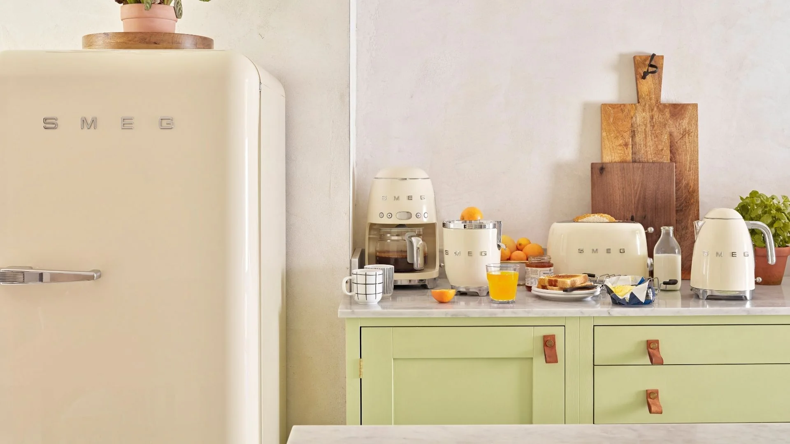
Quay lại danh sách dự án
SCROLL
CASE STUDY · SOCIAL MEDIA · 09/2025–05/2026
Xây dựng & phát triển các kênh Digital cho SMEG Vietnam
Xây dựng và chuẩn hóa nền tảng digital cho SMEG Vietnam — từ định hướng thương hiệu, hệ thống nội dung và địa phương hóa tài liệu global đến triển khai social media, website và các điểm chạm hỗ trợ bán hàng.
01 · TỔNG QUAN
Từ một hiện diện phân mảnh đến hệ thống thương hiệu thống nhất
Cuối năm 2024 và đầu năm 2025, EPICURE VINA bắt đầu phát triển danh mục thiết bị gia dụng SMEG tại Việt Nam. Khi đó, thông tin sản phẩm chủ yếu xuất hiện trên hội nhóm, tài khoản bán hàng và những kênh chưa được vận hành theo một hệ thống thương hiệu thống nhất.
Dự án tập trung xây dựng và chuẩn hóa nền tảng digital: xác lập định hướng thương hiệu, hệ thống nội dung, quy trình quản trị kênh và cách chuyển hóa tài liệu SMEG Global thành nội dung phù hợp với khách hàng Việt Nam.
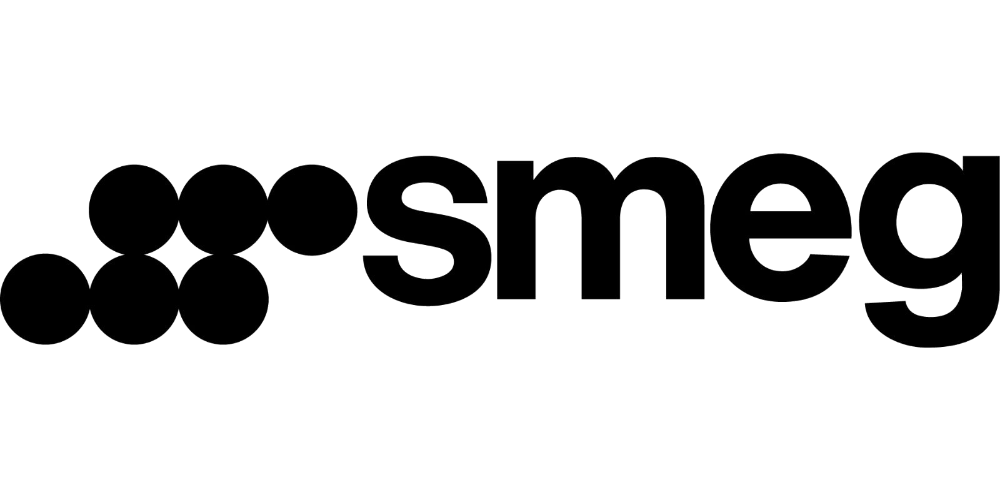
Technology with style
MY ROLE
Lập kế hoạch truyền thông
Xác định content pillars và nhóm sản phẩm ưu tiên
Xây dựng tài liệu marketing từ SMEG Global
Triển khai chương trình bán hàng & hoạt động marketing
02 · KẾT QUẢ ĐẠT ĐƯỢC
Một nền tảng tăng trưởng có thể đo lường
Kết quả ghi nhận từ báo cáo nội bộ, theo phạm vi ước tính trong giai đoạn 01/2025–12/2025.
03 · THỬ THÁCH
Bốn vấn đề cần giải quyết cùng lúc
Dự án không đơn thuần là tạo thêm nội dung. Nền tảng, nhận diện, định hướng sản phẩm và quy trình vận hành đều phải được thiết kế lại trong cùng một hệ thống.
Xây dựng hệ thống mới từ đầu
Nhất quán giữa mọi điểm chạm
Khoảng cách giữa nội dung Global và thị trường Việt Nam
Nguồn hàng và danh mục ưu tiên còn giới hạn
CHIẾN LƯỢC THỰC HIỆN
Chuẩn hóa hệ thống nhận diện
Đồng bộ tone of voice, bố cục, hình ảnh và cách trình bày sản phẩm trên mọi nền tảng.
Global consistency, local relevance
Giữ bản sắc SMEG nhưng chuyển hóa thông điệp theo bối cảnh và hành vi người dùng Việt Nam.
Ưu tiên sản phẩm theo từng giai đoạn
Cân đối độ nhận diện, khả năng cung ứng, mùa vụ và mục tiêu kinh doanh.
Nội dung định hướng phong cách sống
Đưa sản phẩm vào những thói quen, không gian và dịp sử dụng gần gũi với khách hàng.
04 · BRAND PRESENCE AUDIT
Rà soát hiện trạng thương hiệu tại thị trường Việt Nam
Dù đã hiện diện tại Việt Nam trong thời gian dài, SMEG vẫn thường được biết đến như một thương hiệu hàng xách tay. Nội dung chủ yếu đến từ reseller, thiên về commercial và thiếu một định vị hình ảnh thống nhất.
05 · SOCIAL MEDIA FOUNDATION
Xây dựng các kênh social media và chuẩn hóa bộ nhận diện
Bắt đầu bằng việc lập kế hoạch cho các kênh social media đầu tiên của SMEG tại Việt Nam và thống nhất cách thương hiệu xuất hiện trên Facebook, Instagram, YouTube, TikTok cùng các điểm chạm bán hàng.
01Strategic Planning Matrix
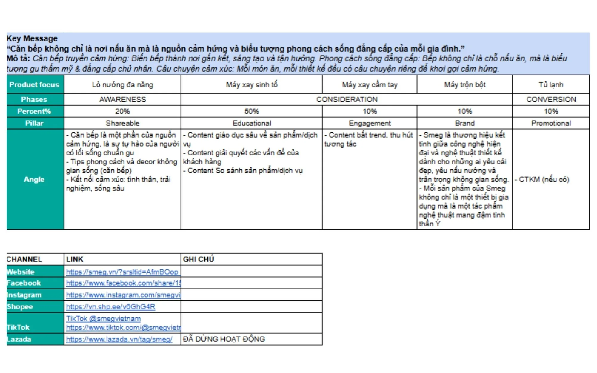
02Content Calendar
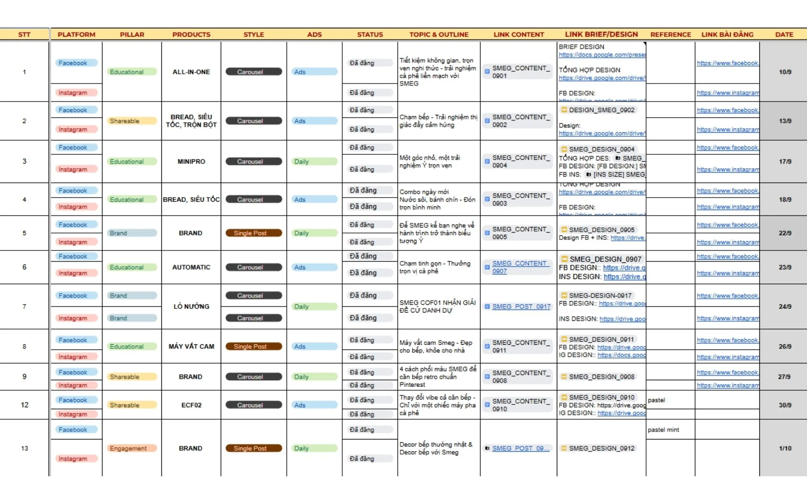
06 · CHANNEL OPERATIONS
Lập lịch và quản trị nội dung tập trung với Metricool
Metricool được sử dụng như trung tâm quản lý lịch xuất bản, phối hợp nội dung và theo dõi hiệu suất giữa các kênh digital.
07 · CONTENT SYSTEM
Một hệ nội dung nhất quán, đủ linh hoạt cho nhiều nhóm sản phẩm
Từ coffee experience và breakfast set đến food preparation, mỗi nhóm sản phẩm có câu chuyện riêng nhưng vẫn dùng chung một nguyên tắc thiết kế, tone of voice và cách tổ chức thông tin.
08 · GLOBAL TO LOCAL
Global consistency,
local relevance
Duy trì ngôn ngữ thiết kế và tinh thần của SMEG Global, đồng thời địa phương hóa thông điệp, hình ảnh và tình huống sử dụng để phù hợp hơn với khách hàng Việt Nam.
09 · PRODUCT PRIORITISATION
Triển khai nội dung theo nhóm sản phẩm ưu tiên và từng mốc thời gian
Ưu tiên sản phẩm dựa trên mức độ nhận diện, khả năng cung ứng, mục tiêu kinh doanh và mùa vụ. Cách tiếp cận này giúp nguồn lực tập trung vào những câu chuyện có khả năng tạo tác động rõ nhất.
01Brand Heritage
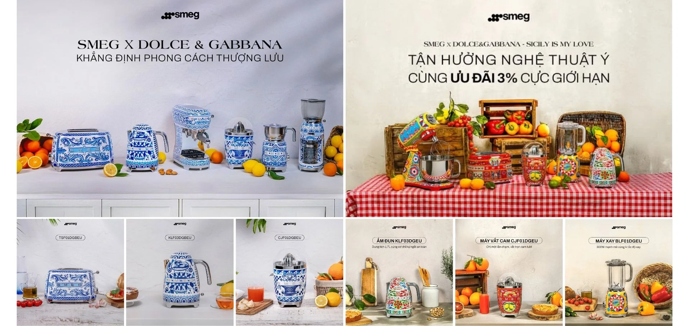
02Product Roadmap
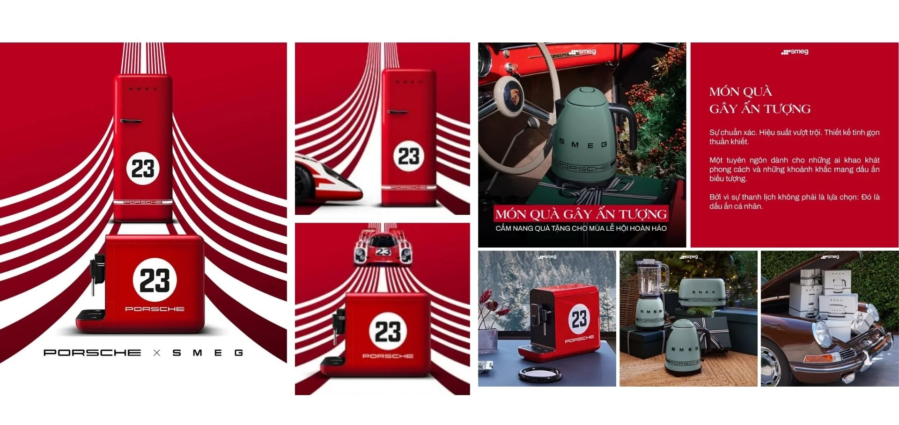
10 · DIGITAL TOUCHPOINTS
Đưa hệ thống thương hiệu vào vận hành đa kênh
Cùng một hệ thống nhận diện và nội dung được điều chỉnh theo vai trò riêng của social media, website và e-commerce — từ tạo cảm hứng đến hỗ trợ cân nhắc và chuyển đổi.
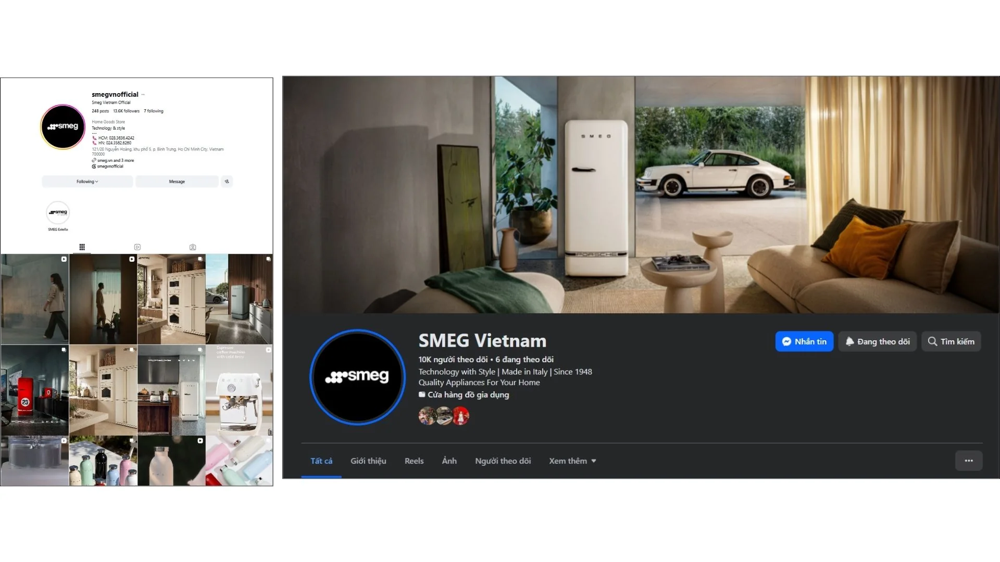
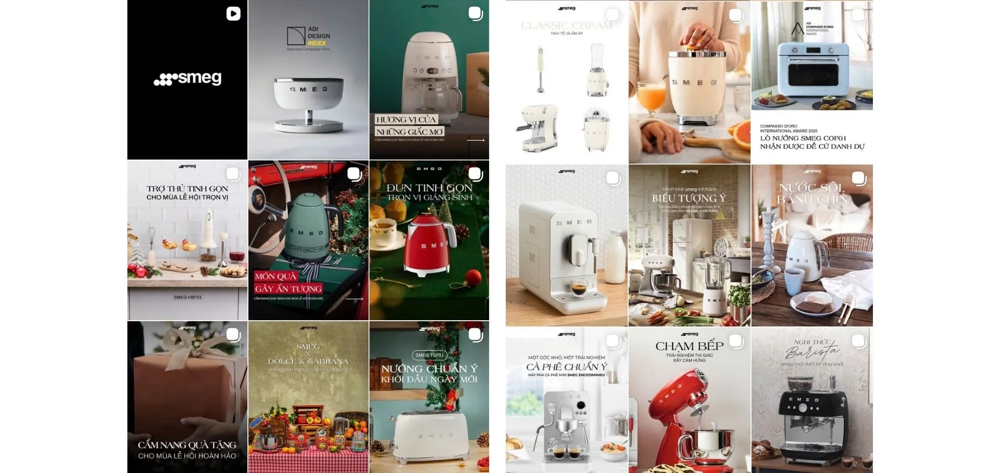
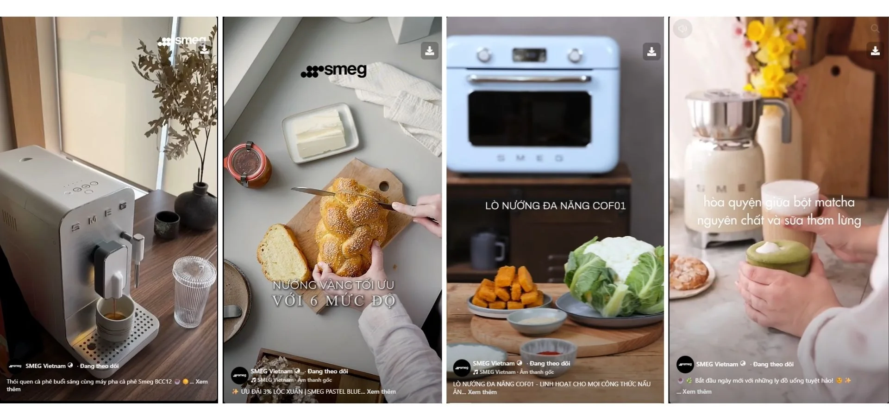
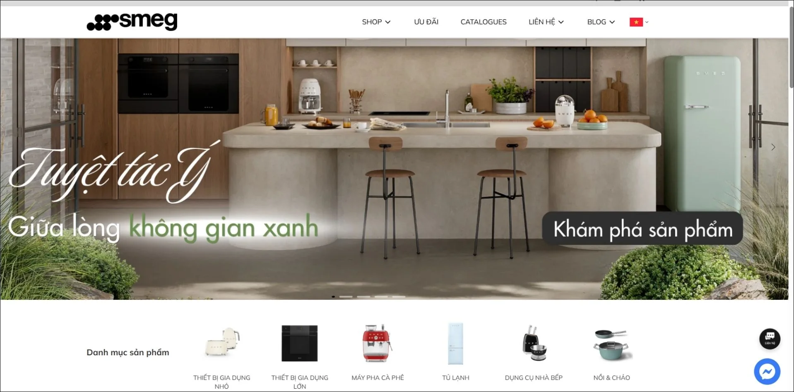
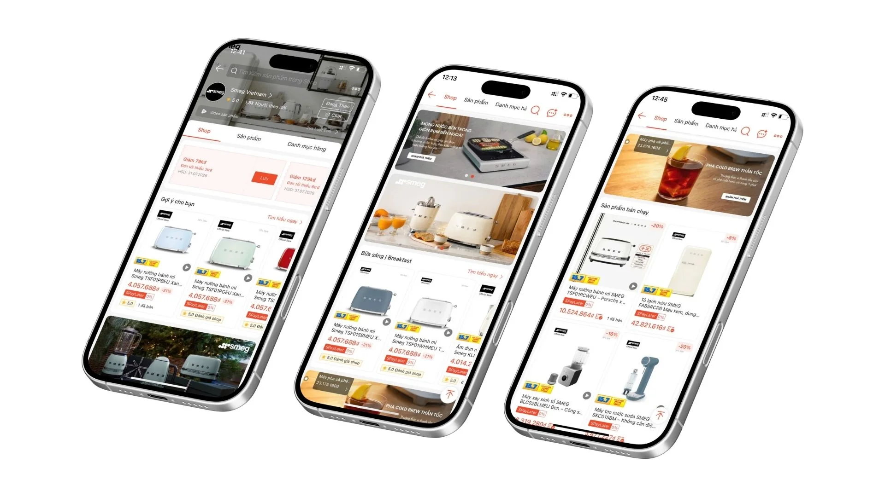
11 · MEASUREMENT & OPTIMISATION
Theo dõi hiệu quả, phản hồi thị trường và tình hình nguồn hàng
Báo cáo trên Metricool được dùng để theo dõi reach, engagement, hiệu suất nội dung và phản hồi của người dùng; từ đó điều chỉnh tuyến nội dung, nhịp xuất bản và nhóm sản phẩm ưu tiên.
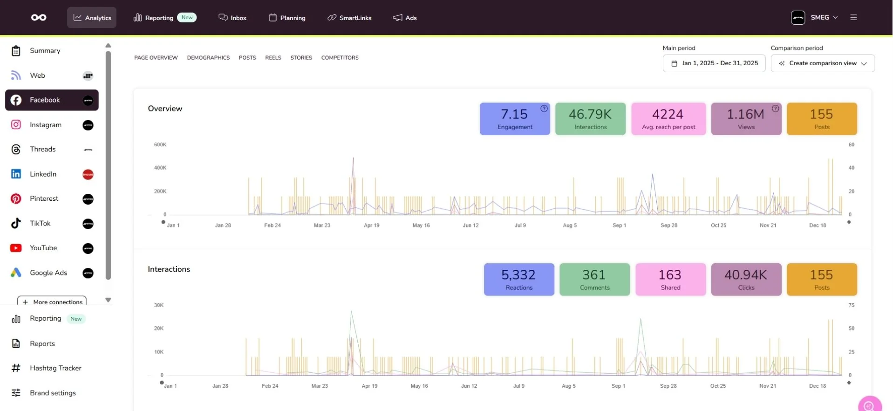
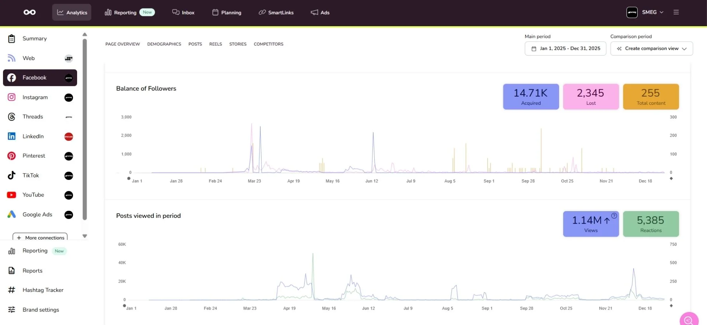

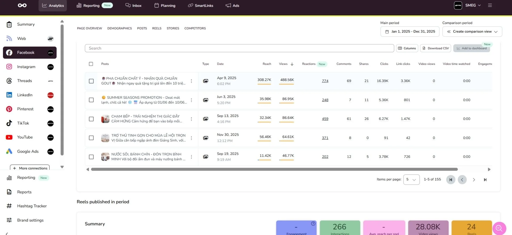
12 · ĐÚC KẾT
Ba nguyên tắc có thể tiếp tục áp dụng cho các thương hiệu premium
Sự nhất quán tạo nên khả năng ghi nhớ
Cảm nhận cao cấp không chỉ đến từ một thiết kế đẹp, mà từ sự nhất quán giữa hình ảnh, thông điệp, website, nội dung và trải nghiệm tại điểm bán.
Địa phương hóa không dừng ở dịch thuật
Địa phương hóa là chuyển hóa giá trị thương hiệu thành những tình huống sử dụng phù hợp với nhu cầu và văn hóa của khách hàng Việt Nam.
Khi nguồn lực giới hạn, ưu tiên là chiến lược
Việc lựa chọn đúng sản phẩm để khai thác trong từng giai đoạn tạo hiệu quả tốt hơn so với truyền tải dàn trải toàn bộ danh mục.